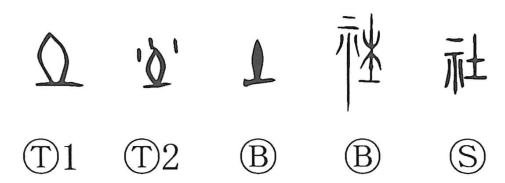

Explanation
社 adds 示, worship, to 土 as its phonetic. 土 is the earlier image of the earth deity, a sacred mound or upright earth-place. Some early forms add drops of wine poured over it in offering. As 土 acquired the general earth meaning, 示 distinguished the sacred place in 社.
A local spirit was worshipped at the site, often with a tree planted as the place upon which the presence could settle. Establishing an earth-shrine and its boundaries was part of creating a political community. Ceremonies first acknowledged the deity belonging to that ground.
社 therefore names both the sacred place and the people organized around it. From the shrine's community come an association or organized group, the sense retained in 結社 and 会社. In Japanese it also names the yashiro, a shrine, while the original earth-deity setting remains important for understanding the formation.